Tutorial
Para utilizar o rastreador no seu celular, é necessário primeiro instalar o aplicativo.
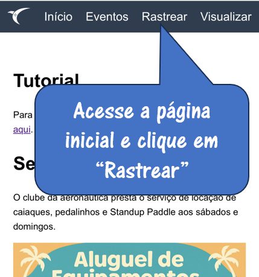 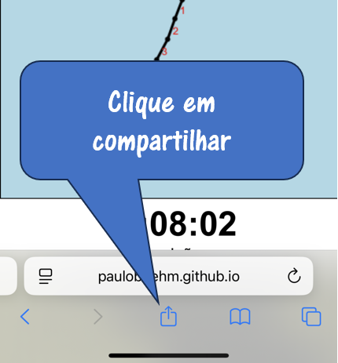 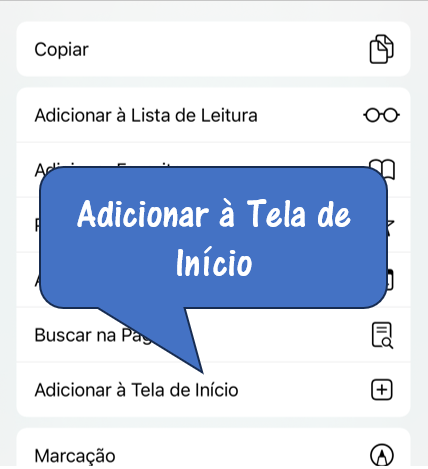 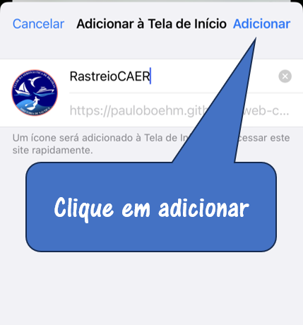 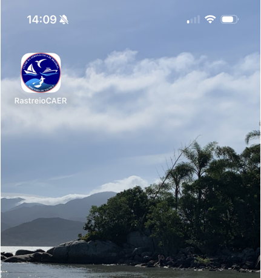Para iniciar o rastreio da posição, selecione o nome do barco. Antes do horário de largada do competidor, clique em iniciar para começar a gravação do trajeto.
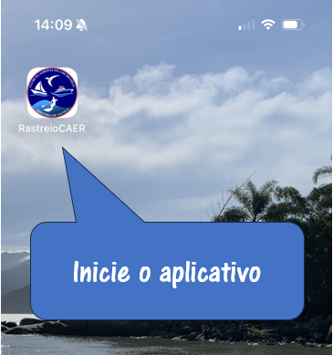 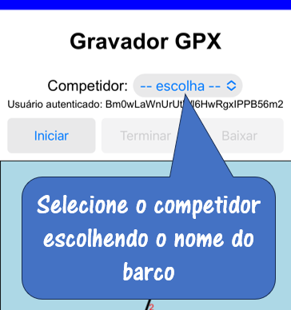 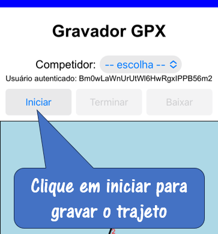 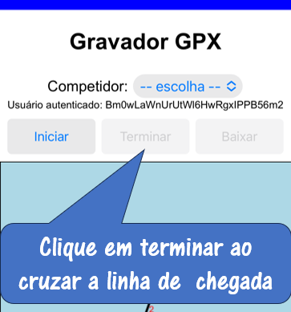 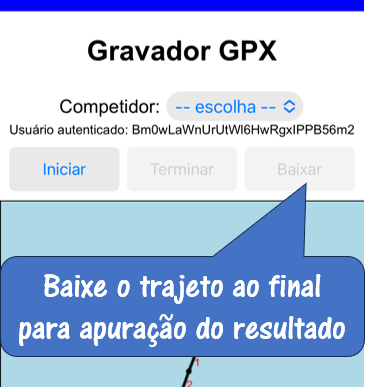Após o término, envie o arquivo baixado para nautica_caer@yahoo.com.br.
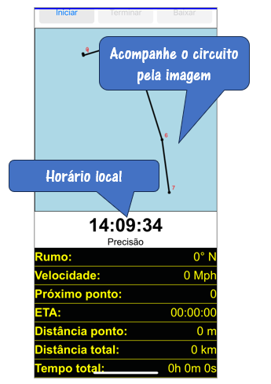 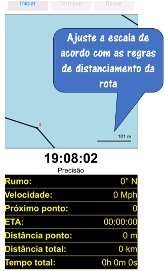Durante o percurso, acompanhe as curvas do circuito pela imagem. O painel abaixo indica o rumo e velocidade atuais, bem como a distância e hora estimada de passagem no próximo ponto, considerando a velocidade atual. A velocidade a ser mantida em cada perna e a hora de passagem em cada ponto estará indicada no calunga que será distribuído antes da prova.
Pressione no lado esquerdo ou direito da tela para ajustar a escala. Verifique nas regras da competição qual o desvio máximo da rota permitido para selecionar uma escala adequada para a visualização do circuito.